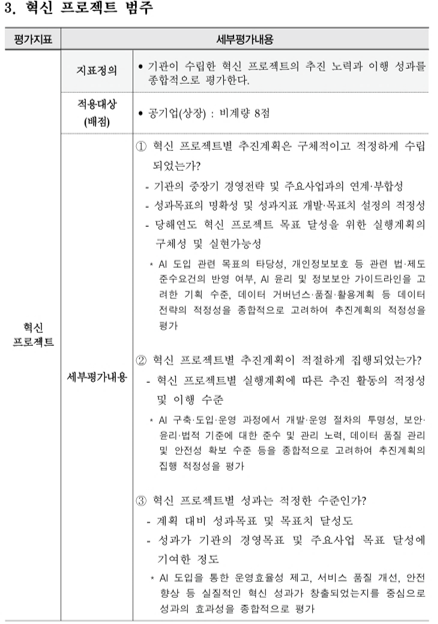
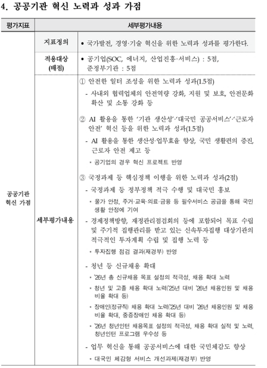

"우리 기관도 생성형 AI를 업무에 쓰고 싶다." 지난 1~2년 사이 공공기관 실무자라면 누구나 한 번쯤 떠올렸을 생각입니다. 그런데 막상 시도해보면 곧바로 벽에 부딪힙니다. 업무망은 인터넷과 물리적으로 분리되어 있고, ChatGPT 같은 외부 생성형 AI 서비스는 애초에 접속조차 되지 않기 때문입니다.
업무 자료를 다루려면 인터넷망으로 옮겨야 하고, 그 과정에서 별도의 반출입 절차와 보안 검토를 거쳐야 합니다. 결재 문서 초안을 AI로 다듬고 싶어도, 그 문서가 업무망에 있는 이상 방법이 마땅치 않습니다. 20년 가까이 국내 공공·금융 네트워크를 지켜온 망분리 원칙은 외부 위협 차단에는 분명 효과적이었지만, "클라우드와 AI가 업무의 기본값이 된" 지금의 업무 환경과는 정면으로 충돌하고 있습니다[1].
"AI를 쓰고는 싶은데, 우리 네트워크 구조로는 방법이 없다" — 지금 대부분의 공공기관이 처한 상황입니다.
국가정보원, 새로운 국가망보안체계(N2SF)를 내놓다
이 딜레마에 대한 정부 차원의 답이 2025년 9월 발표된 국가 망 보안체계(N2SF, National Network Security Framework)입니다. "전부 막거나 전부 여는" 이분법 대신, 업무정보와 시스템을 C(기밀)·S(민감)·O(공개) 3개 등급으로 나누고 등급별로 통제 수준을 달리 적용하는 방식입니다. 공개 등급으로 분류된 정보·업무라면 클라우드나 생성형 AI 같은 신기술을 훨씬 유연하게 쓸 수 있는 길이 열린 것입니다[2].
N2SF는 발표 이후 빠르게 실행 단계로 넘어가고 있습니다. 2026년 현재 6개 공공기관이 N2SF를 실제 업무환경에 적용하는 파일럿(POC) 사업을 진행 중이며, 국가정보원의 보안성 검토라는 실전 관문을 통과하고 있는 단계입니다. 여기에 개정된 국가 사이버보안 기본지침이 2026년 5월 1일자로 시행되면서, N2SF는 단순 권고를 넘어 법적 구속력을 갖는 지침으로 격상됐습니다[2].
N2SF에 대한 자세한 설명은 이전 인사이트를 참고하세요 「망분리, 이제 다르게 설계해야 할 때」 — N2SF 등급 체계·정보흐름 통제 원리 상세 해설"지금 당장" 새 체계로 넘어가기엔, 넘어야 할 산이 많습니다
N2SF가 방향을 제시했다고 해서, 개별 공공기관이 당장 이 체계로 전환할 수 있는 것은 아닙니다. 실무 현장에서는 세 갈래의 현실적 제약이 반복적으로 확인됩니다.
① 비용 — 망 구조 자체를 다시 설계해야 하는 부담
C·S·O 등급 분류, 정보흐름 통제, CDS(Cross Domain Solution)·SSL 가시화 같은 신규 보안 인프라 도입은 단일 솔루션 구매로 끝나지 않습니다. 네트워크 구조 재설계와 다년간의 단계적 투자가 필요한 사업입니다.
② 기술 — 무엇을 갖고 있는지부터 다시 파악해야 함
등급을 나누려면 그 전에 보유 자산부터 정확히 파악해야 하는데, 부서별로 자산 데이터가 흩어져 있어 전체 현황 파악조차 쉽지 않은 경우가 많습니다. 온프레미스 서버·네트워크 장비 같은 물리적 자산은 물론, 애플리케이션·프로세스·서비스 계정까지 포함하는 논리적 자산까지 새로 식별해야 하는 것도 상당한 작업입니다[2].
③ 보안·절차 — 국정원 승인이라는 관문
준비·등급분류·위협식별·대책수립·적절성평가의 5단계 절차를 기관이 스스로 수행해 산출물을 만들고, 국가정보원의 최종 검토·승인을 받아야 비로소 클라우드·AI를 실제 업무에 도입할 수 있습니다. 권한·인증·분리격리·통제·데이터·정보자산 6개 영역에 걸친 280여개 세부 통제 항목을 충족해야 하는 만큼, 승인까지 걸리는 시간도 짧지 않습니다[2].
즉, N2SF라는 방향은 확정되었지만, 그 방향에 도달하는 데는 여전히 시간이 걸립니다. 그리고 바로 이 시차가, 지금 이 글이 다루려는 지점입니다.
망 체계 전환을 기다릴 시간적 여유는, 공공기관에 주어지지 않았습니다
정부는 N2SF 같은 인프라 전환과는 별개로, 공공부문의 AI 활용 자체는 미룰 수 없는 과제로 못박고 있습니다. 기획재정부는 2025년 7월 "공공기관이 AI 도입·활용의 선도조직으로 나서야 한다"는 정책 방향을 공식 발표했고[3], 실제로 공공부문의 AI 도입은 이미 상당히 진행된 상태입니다.
AI를 도입한 기관 비율
계약 총액(2015년 대비 약 11.5배)
전년 대비 증가율(42건)
※ 위 수치는 소프트웨어정책연구소(SPRi)가 조달청 나라장터 등 용역계약 데이터를 기반으로 분석한 결과이며, ICT 시스템이 없는 소규모 기관을 제외하면 실질 도입률은 더 높을 것으로 추정됩니다[4].
망분리라는 구조적 제약은 여전히 유효하지만, "그래서 AI를 나중에 쓴다"는 선택지는 정책적으로도, 현장의 흐름으로도 이미 성립하지 않게 된 것입니다.
공공기관 경영성과평가, AI를 정식 평가 항목으로 들여오다
공공기관에 AI 활용이 "권장 사항"을 넘어 "평가 대상"이 되었다는 사실을 가장 분명하게 보여주는 지표가 바로 공공기관 경영실적평가(경영평가)입니다. 기획재정부가 2026년 1월 공개한 「2026년도 공공기관 경영평가편람」에는 AI 관련 평가기준이 기관 유형별로 두 갈래로 명문화되어 있습니다[5].

"혁신 프로젝트"는 이름만 보면 AI 전용 지표처럼 보이지 않지만, 계획·집행·성과 3단계 세부평가내용 전 구간에 AI 관련 기준이 명시적으로 삽입되어 있어 사실상 상장 공기업의 AI 도입 수준을 평가하는 핵심 통로 역할을 합니다.
추진계획의 구체성·타당성을 평가하며, "AI 도입 관련 목적의 타당성, 개인정보보호 등 관련 법·제도 준수여부, AI 윤리 및 정보보안 가이드라인을 고려한 기획 수준, 데이터 거버넌스·품질·활용전략의 적정성"을 종합적으로 고려해 심사합니다.
실행계획에 따른 이행 수준을 평가하며, "AI 구축·도입·운영 과정에서 개발·운영 절차의 투명성, 보안·윤리·법적 기준에 대한 준수 및 관리 노력, 데이터 품질 관리 및 안전성 확보 노력"이 핵심 기준입니다.
계획 대비 목표 달성도를 평가하며, "AI 도입을 통한 운영효율성 제고, 서비스 품질 개선, 안전 향상 등 실질적인 혁신 성과가 창출되었는지"를 중심으로 효과성을 평가합니다.
즉 상장 공기업은 "AI를 도입했는가"가 아니라, 법·윤리·보안 기준을 지키며 도입했고, 절차가 투명했으며, 실질적 성과로 이어졌는가까지 8점 전체를 통해 검증받는 구조입니다.

상장 공기업이 아닌 공공기관에는 별도의 가점 항목 "공공기관 혁신 노력과 성과 가점"(5점)이 적용됩니다. 이 항목은 공기업(SOC·에너지·산업진흥·서비스)·준정부기관 등 적용대상 카테고리별로 동일한 내용이 반복 규정되어 있습니다. 이 5점은 ① 안전한 일터 조성(1.5점), ② AI 활용을 통한 '기관 생산성'·'대국민 공공서비스'·'근로자 안전' 혁신 등을 위한 노력과 성과(1.5점), ③ 국정과제 등 핵심정책 이행(2점)으로 구성됩니다. 편람은 "공기업의 경우 혁신 프로젝트 반영"이라고 명시해, 이미 혁신 프로젝트(8점) 지표를 적용받는 상장 공기업과 중복 평가되지 않도록 구분하고 있습니다 — 결과적으로 상장 공기업을 제외한 공공기관에는 AI 활용 성과가 1.5점의 가산점으로 별도 반영되는 구조입니다[7].
| 기관 구분 | 반영 항목 | 배점 | 평가 방식 |
|---|---|---|---|
| 공기업(상장) | 평가지표 "혁신 프로젝트" | 비계량 8점 | 계획·집행·성과 전 단계에 AI 도입 목적·윤리·보안·데이터 거버넌스 기준을 반영해 지표 전체를 평가 |
| 공공기관(상장사 제외) | "공공기관 혁신 노력과 성과 가점" 中 AI 활용 혁신 | +1.5점(가점 5점 中) | 기관 생산성·대국민 서비스·근로자 안전 혁신 성과에 가점 부여 |
| 지방공기업 | 경영혁신 추진 활동 배점 상향(행안부 편람) | 2.0→3.0점 | AI 활용을 핵심 세부 평가 항목으로 개편 |
| 자료: 기획재정부 「2026년도 공공기관 경영평가편람」(2026.1) 세부평가내용 발췌 · 행정안전부 「2026년도 지방공기업 경영평가편람」[5][6][7]. | |||
결국 두 항목이 가리키는 메시지는 하나입니다. 망분리 환경에서도 보안·윤리·데이터 거버넌스 기준을 지키며 AI를 도입했는지가 실제 평가의 관건이라는 것입니다. 단순히 "AI를 썼다"는 사실이 아니라 그 도입 과정 전체가 법·제도·보안 기준을 만족했는지를 심사한다는 점에서, 지금 도입하는 AI 솔루션의 아키텍처 자체가 이미 평가 대응력을 좌우합니다.
알리오(ALIO)는 이미 AI 활용현황을 공개 통계 항목으로 다루고 있습니다
공공기관 경영정보 공개시스템인 알리오(ALIO)는 임직원 현황, 신규채용, 개인정보보호, 안전관리등급 등과 함께 "AI 활용현황"을 별도의 공시 통계 카테고리(통계 > 주요통계 > AI 활용현황)로 운영하고 있습니다. 즉, 각 공공기관의 AI 활용 수준은 이제 대내 평가 자료를 넘어, 국민 누구나 열람할 수 있는 공개 정보로 다뤄지고 있는 것입니다.
알리오(ALIO) 공공기관 경영정보 공개시스템 바로가기 www.alio.go.kr · 통계 › 주요통계 › AI 활용현황에서 기관별 공시 확인 가능경영성과평가에서의 가점, 그리고 알리오를 통한 상시 공시. 이 두 가지는 결국 같은 메시지를 가리킵니다. 공공기관의 AI 활용은 더 이상 개별 기관의 선택 사항이 아니라, 시대적 흐름·기술적 요구·정부의 정책 방향이 함께 만들어낸 사실상의 의무가 되었다는 것입니다.
공공기관 AI 전담조직 활용 현황
※ 알리오(ALIO) 공시 기준, 2026년 2분기 시점 공공기관 89개 기관 데이터입니다.
공공기관 수
운영 중인 기관 비율
AI 활용사례 합계
| 기관명 | 전담조직 | 전담인력 | 활용사례 |
|---|---|---|---|
| 한국도로공사 | 운영 | 69명 | 25건 |
| 국토안전관리원 | 운영 | 7명 | 24건 |
| 중소벤처기업진흥공단 | 운영 | 75명 | 20건 |
| 한국공항공사 | 운영 | 22명 | 20건 |
| 한국수자원공사 | 운영 | - | 16건 |
| 주택도시보증공사 | 운영 | 19명 | 15건 |
| 한국가스안전공사 | 운영 | 6명 | 15건 |
| 한국교통안전공단 | 운영 | 4명 | 15건 |
| 한국토지주택공사 | 운영 | 12명 | 14건 |
| 기술보증기금 | 운영 | 44명 | 12건 |
| 인천국제공항공사 | 운영 | 41명 | 12건 |
| 한국전력공사 | 운영 | 109명 | 12건 |
| 한국철도공사 | 운영 | 24명 | 12건 |
| 서울올림픽기념국민체육진흥공단 | 운영 | 40명 | 11건 |
| 한국고용정보원 | 운영 | 17명 | 11건 |
| 자료: 알리오(ALIO) 공공기관 경영정보 공개시스템, 2026년 2분기 기준 · 전체 89개 공공기관 중 활용사례 상위 15개 기관 발췌. 전체 데이터는 아래 원본 파일에서 확인할 수 있습니다. | |||
남은 질문은 하나입니다 — "어떻게" 시작할 것인가
정리하면 지금 공공기관이 서 있는 지점은 이렇습니다. 망분리 구조상 외부 생성형 AI는 여전히 쓰기 어렵고, N2SF라는 근본적 해법은 아직 파일럿 단계이며 개별 기관 적용까지는 시간이 더 필요합니다. 그런데 경영평가와 알리오 공시는 지금 이 순간의 AI 활용 성과를 요구하고 있습니다.
이 간극을 메우는 현실적인 방법은 하나로 좁혀집니다. 기존 업무망 구조를 바꾸지 않고도, 그 안에서 안전하게 완결되는 AI 환경을 지금 도입하는 것입니다. 외부와 데이터를 주고받지 않는 폐쇄형 인프라 위에서 동작하는 온프레미스 로컬 LLM이 바로 그 답입니다.
망분리 환경 그대로, 지금 도입 가능한 온프레미스 로컬 LLM
ESNET은 통신설비·정보설비 구축과 네트워크 보안 인프라 사업을 오랫동안 수행해온 정보통신공사업 기업으로서, "네트워크 구조를 새로 짜지 않고도" AI를 안전하게 들여오는 방법을 로컬 LLM 솔루션으로 제시합니다. 클라우드 API를 호출하지 않고, 기관이 보유한 서버 위에서 모델이 완결적으로 동작하기 때문에 업무망·인터넷망 분리 원칙을 그대로 유지한 채 도입할 수 있습니다.
기술적 특징
시스템적 효과 — 왜 "지금" 넣을 수 있는가
가장 큰 차별점은 N2SF의 최종 승인을 기다릴 필요가 없다는 점입니다. N2SF는 정보가 인터넷망과 오가는 흐름을 통제 대상으로 삼는데, 로컬 LLM은 애초에 그 흐름 자체가 발생하지 않는 폐쇄형 구조이기 때문입니다. 기관은 별도의 국정원 보안성 검토 없이도 내부 규정에 따라 즉시 도입·운영을 시작할 수 있고, 이후 N2SF 체계가 확정되면 기존에 확보해 둔 자산 목록과 통제 이력을 그대로 활용해 전환 절차를 단축할 수 있습니다.
| 구분 | 클라우드 생성형 AI API | 온프레미스 로컬 LLM |
|---|---|---|
| 망분리 적합성 | 업무망에서 직접 사용 불가(반출입 절차 필요) | 업무망 내부에서 완결, 반출입 불필요 |
| N2SF 대응 | 등급 분류·승인 절차 완료 후 사용 가능 | 구축 즉시 사용, 이후 등급 체계로 이관 용이 |
| 데이터 주권 | 외부 서버로 데이터 전송 | 데이터가 기관 경계를 벗어나지 않음 |
| 비용 구조 | 사용량 기반 종량 과금(토큰당 과금) | 초기 인프라 투자 후 고정비 중심 |
| 커스터마이징 | 제한적(프롬프트 수준) | 내부 문서·업무에 맞춘 파인튜닝·RAG 가능 |
기능적 효과 — 시장이 보여주는 효율성
온프레미스 방식의 효율성은 국내외 시장 데이터로도 뒷받침됩니다. 다만 아래 수치는 조사기관·업체별로 산정 방식이 다를 수 있어 참고용 정황 지표로 이해하는 것이 정확합니다.
온프레미스 방식의 시장 점유율
연평균 성장률(2026~2034 CAGR)
"업무효율화" 비중
※ Mordor Intelligence는 은행·병원·공공기관 등 규제 산업이 온프레미스 지출을 주도하는 것으로 분석하고 있습니다[8]. Global Market Insights는 2026년 엔터프라이즈 LLM 시장을 약 113억 달러로, 2034년까지 연 25.8% 성장할 것으로 전망합니다[9].
참고 사례 — 공공기관의 sLLM 실전 적용
경찰청은 전국 239개소에서 운영 중인 AI 음성인식 조서 작성 시스템을 고도화하며 LoRA·양자화 기반 sLLM을 도입했습니다. 방대한 진술 텍스트에서 핵심 정보를 추출·요약하는 업무에 특화 학습시켜, 제한된 자원 환경에서도 조서 작성 속도와 정확도를 함께 개선한 사례로 꼽힙니다[10]. 이는 "제한된 인프라 위에서도 업무 특화형 AI가 충분히 실용적인 성과를 낼 수 있다"는 것을 보여주는 공공부문의 대표적인 실증 사례입니다.
N2SF 전환을 "기다리는" 전략이 아니라, 지금의 망분리 구조 안에서 "이미 가능한" AI 활용을 먼저 확보하는 전략이 필요한 시점입니다.
참고 자료
- ESNET 인사이트, 「망분리, 이제 다르게 설계해야 할 때」, 2026.07 — N2SF 배경 및 망분리 원칙 연혁
- 국가정보원 국가사이버안보센터(NCSC), 「국가 망 보안체계(N2SF) 보안가이드라인 1.0」, 2025 — ncsc.go.kr
- 기획재정부, 「공공기관이 AI 도입·활용 선도조직으로 나선다」, 보도자료, 2025.7.30 — mofe.go.kr
- 소프트웨어정책연구소(SPRi), 「2025년 공공부문 AI 도입현황 연구」, 2026.4 — spri.kr
- 기획재정부, 「2026년도 공공기관 경영평가편람」, 2026.1.23 게시 — mofe.go.kr 정책게시판
- 헤럴드경제, 「공공기관 평가, '안전·AI' 비중 키운다」, 2025 — biz.heraldcorp.com · 데일리안, 「공공기관 경영평가 발표 임박…안전·AI, 판도 바꿀 변수」 — dailian.co.kr
- 기획재정부, 「2026년도 공공기관 경영평가편람」 세부평가내용 발췌 — 평가지표 "혁신 프로젝트"(공기업 상장, 비계량 8점) 및 "4. 공공기관 혁신 노력과 성과 가점"(공기업 SOC 등·준정부기관 5점) 조문
- Mordor Intelligence, 「Large Language Model (LLM) Market」— mordorintelligence.com
- Global Market Insights, 「Enterprise LLM Market Size & Share」— gminsights.com
- Skelter Labs, 「경찰청 BELLA LLM 도입 사례」— skelterlabs.com
- 알리오(ALIO) 공공기관 경영정보 공개시스템 — www.alio.go.kr
※ 본 자료는 공개된 정부 발표자료·언론보도·시장조사기관 리포트를 종합해 작성했습니다. 경영평가편람의 세부 배점·조문은 개정될 수 있으므로, 실제 의사결정 시에는 기획재정부·행정안전부가 배포한 최신 편람 원문을 기준으로 재확인하시기 바랍니다.